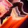
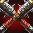
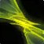

拉维 → 扭缠盘蛇
高阶进化者开始进化进化
高阶进化者一开始进化就丢风暴之锤，4 秒昏迷直接把引导断掉。让它读完会回三成血，再套上 25 万的盾，之后什么控制都没用。
这本从头到尾都是毒，读条的法术特别多，反射几乎每次转好都有活干。三件事最值钱：同步毒液、三重喷吐读条时开法术反射，前者一反就省掉 35 秒的持续毒；濒死喘息读完、藤蔓连上身，马上英勇飞跃跳出 10 码，让盘蛇早点散开；高阶进化者一开始进化就丢风暴之锤，别让它套上 25 万的盾。到了祖尔加，光束由你来拦，开着反射站进去。
一整场 +24 里，剑在人在、集结呐喊、英勇飞跃分别交给了哪个机制。

高阶进化者一开始进化就丢风暴之锤，4 秒昏迷直接把引导断掉。让它读完会回三成血，再套上 25 万的盾，之后什么控制都没用。
同步毒液读条的后半段开法术反射，这一发整个弹回盘蛇，后面 35 秒的毒你一跳都不吃。光你自己，每轮就少挨将近 70 万自然。
濒死喘息读完、藤蔓连上身，1 秒内朝外英勇飞跃。所有人都离开 10 码盘蛇才会散，近战跑得最慢，你先出去全队就少叠几层。
毒牙仪式读完、光束落下的那一刻开法术反射，站进去替队友拦。光束持续 8 秒，反射垫住前 5 秒，拦完身上还会挂一层仪式毒液。
扭缠盘蛇读条濒死喘息 5 秒，这期间全队每秒挨一跳物理伤害，而且每秒多叠一层，一直叠到盘蛇被撕开为止。读完后藤蔓之握把所有人连到它身上，被连住的人全都离开 10 码，它才会解除盘卷、散成一地小蛇。近战离它最近，你越早出去，全队就少叠几层。
濒死喘息一场两轮，间隔一分半；点了腾跃步伐，飞跃 30 秒就转好，中间照样可以拿来赶路，只要算好下一轮前转回来。反射这时候刚好转好的话，读条结束时开一下，解除盘卷那一下自然伤害也能少吃 20%。

切回输出每一行：看到什么 → 按什么 → 为什么。
| 负面效果 | 类型 | 能自解吗 | 怎么处理 |
|---|---|---|---|
| 魔法／14 秒，越走越慢 | 队友驱散 | 读向你时先反射；中了就喊驱散，越拖越走不动。 | |
| 中毒／8 秒 | 队友驱散 | 读向你时先反射；中了就喊驱毒。 | |
| 物理／每秒叠一层 | ✗ 盘蛇散开才停 | 藤蔓连上就飞跃出 10 码，见第 03 节。 | |
| 自然／5 秒后 8 码爆开 | ✗ 只能减伤 | 防御姿态扛着，爆之前离开人群，孵出的幼体一起打掉。 | |
| 物理流血／7 秒 | ✗ 只能减伤 | 剑在人在盖住；流血无视护甲，招架也挡不了。 | |
 仪式毒液 | 自然／到时喷发 38.8 万 | ✗ 只能减伤 | 拦完光束就挂上，喷发前让治疗把你奶满。 |
| 自然／4 秒 | ✗ 只能减伤 | 祭坛利刃闪到身后砍的，4 秒就掉，交给治疗。 | |
| 物理／吸收 14.3 万治疗 | ✗ 刷满就掉 | 治疗刷过吸收量就没了，别为它交减伤。 |
武器 · 屠戮者。复制后，在游戏天赋界面选择「导入」。